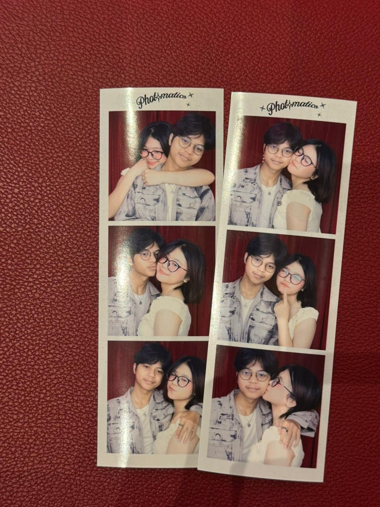
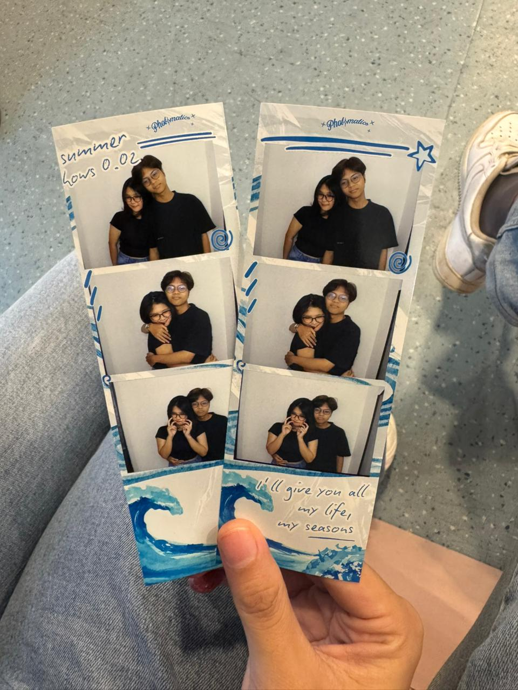
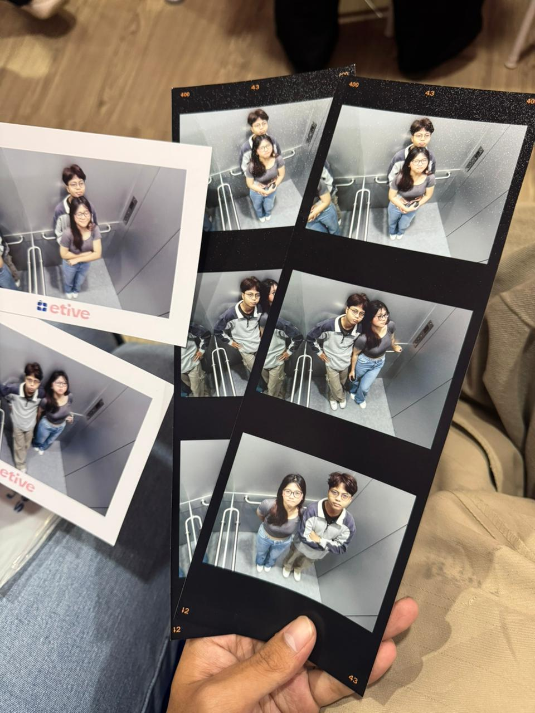
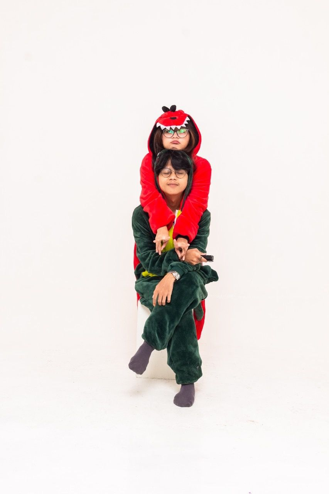

Sebuah tempat kecil yang menyimpan sebagian dari perjalanan kita sejak Juli 2023.
Untuk
Terima kasih sudah menjadi bagian dari perjalanan hidupku selama hampir tiga tahun terakhir. Website ini dibuat untuk menyimpan sebagian kecil dari kenangan yang telah kita lalui bersama.
Beberapa momen yang berhasil kita abadikan, dan banyak cerita yang akan selalu kita ingat.




Potongan-potongan kecil dari perjalanan yang pernah kita jalani bersama.
Video 1
Video 2
Setiap momen adalah mahakarya cinta kita
Perkenalan yang sederhana, tetapi menjadi awal dari banyak hal baik yang datang setelahnya.
Menutup tahun dengan lebih banyak cerita, pengalaman, dan pelajaran yang kita lalui bersama.
Satu tahun yang mengajarkan banyak hal tentang memahami, mendengarkan, dan bertumbuh bersama.
Tidak semua hari selalu mudah, tetapi kita berhasil melewati banyak hal bersama.
Dua tahun yang penuh kenangan, tawa, diskusi panjang, dan berbagai pengalaman baru.
Sampai hari ini, masih banyak hal yang patut disyukuri dari perjalanan yang sudah kita lalui.
Waktu terus berjalan, dan setiap harinya menambah cerita baru dalam perjalanan kita.
Beberapa kata sebagai bentuk terima kasih untukmu.
Klik untuk membaca
Terima kasih sudah hadir di banyak fase hidupku dan menjadi seseorang yang selalu bisa diajak berbagi cerita.
Klik untuk membaca
Terima kasih untuk semua waktu, perhatian, dan dukungan yang mungkin sering terlihat sederhana, tetapi selalu berarti.
Klik untuk membaca
Aku bersyukur karena selama hampir tiga tahun ini kita terus belajar memahami satu sama lain.
Klik untuk membaca
Semoga apa pun yang akan datang ke depannya, kita tetap bisa saling mendukung dan bertumbuh menjadi versi terbaik dari diri kita masing-masing.
Untuk pengalaman terbaik, tekan tombol ▶ pada player di bawah.
Untuk pengalaman terbaik, tekan tombol Play pada lagu di bawah.
Browser pada perangkat mobile membatasi pemutaran musik otomatis.